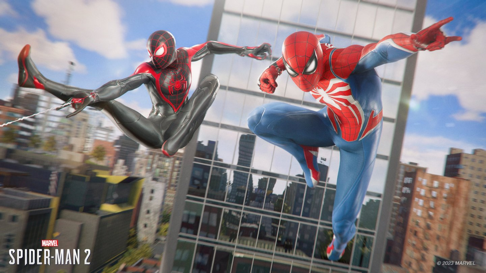

Spider-Man in games
Insomniac’s series lets you swing across Marvel’s New York as Peter Parker, Miles Morales or both. The three main adventures tell a connected story.
See the play order
Play the main story in order
Marvel’s Spider-Man
Start with Peter as an experienced Spider-Man balancing his personal life with protecting the city. The original launched in 2018, and Remastered tells the same main story.
Marvel’s Spider-Man: Miles Morales
Continue with Miles in a snowy New York as he learns to use camouflage and bio-electric attacks to protect his community.
Marvel’s Spider-Man 2
Play as both Peter and Miles as their stories come together and Venom threatens the city.
Find another way into the story
Miles is also the lead in Into the Spider-Verse. Visit the film guide to compare his animated story with Peter’s live-action starting points.